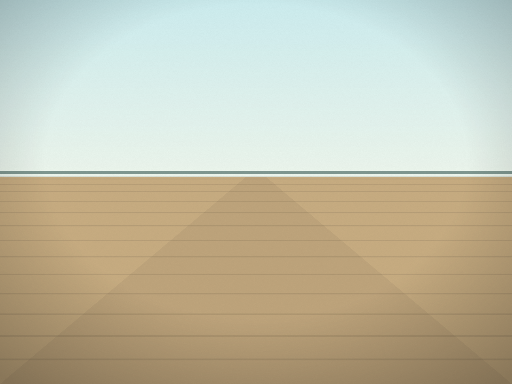

The most unusual building in Lewes was designed to look as if it belonged in Holland. That is exactly what it was meant to do.
A building for an anniversary
The Zwaanendael Museum was built in 1931 to mark the 300th anniversary of Swanendael, the state's first European colony. The Dutch settled it in 1631 along the Hoorn Kill, the waterway now called the Lewes-Rehoboth Canal.
Modeled on Hoorn
The building is modeled on the town hall in Hoorn, in the Netherlands. Its stepped facade gable, carved stonework and decorated shutters are the details that make it stand out on a Lewes street.
It was designed by E. William Martin, the architect of two of the state's most familiar buildings in Dover: Legislative Hall and the Hall of Records.
What it holds
The Zwaanendael is a museum of the Delaware Division of Historical and Cultural Affairs. It has been accredited by the American Alliance of Museums. Over the years its exhibits and programs have covered the Swanendael colony, the British warship DeBraak lost off the cape in 1798, and the wider history of the Lewes area. Its "Mysteries of History" walking tours explore the town's stranger stories.
Kept up
A building meant to look old has to be looked after. The Division carried out a rehabilitation of the museum's exterior beginning in 2020, to keep the details that define it in good condition.
Seeing it
The museum stands at 102 Kings Highway in Lewes. Hours and current exhibits are set by the Division; check its current listings before you go. Even from the street, it is one of the clearest reminders that Lewes's story begins with the Dutch, nearly a century before most of the town's colonial houses were built.
Sources: Delaware Division of Historical and Cultural Affairs, "Zwaanendael Museum History" (history.delaware.gov), for the 1931 construction, the 300th anniversary of Swanendael, the Hoorn Kill, the Hoorn town hall model, the facade details and the architect E. William Martin; the Division's 2018 note on American Alliance of Museums accreditation and its 2020 note on exterior rehabilitation; State of Delaware News on the museum's "Mysteries of History" tours. The comparison with the age of Lewes's colonial houses is general and not a dated claim. Delaware Beach Finds did not visit for this story.